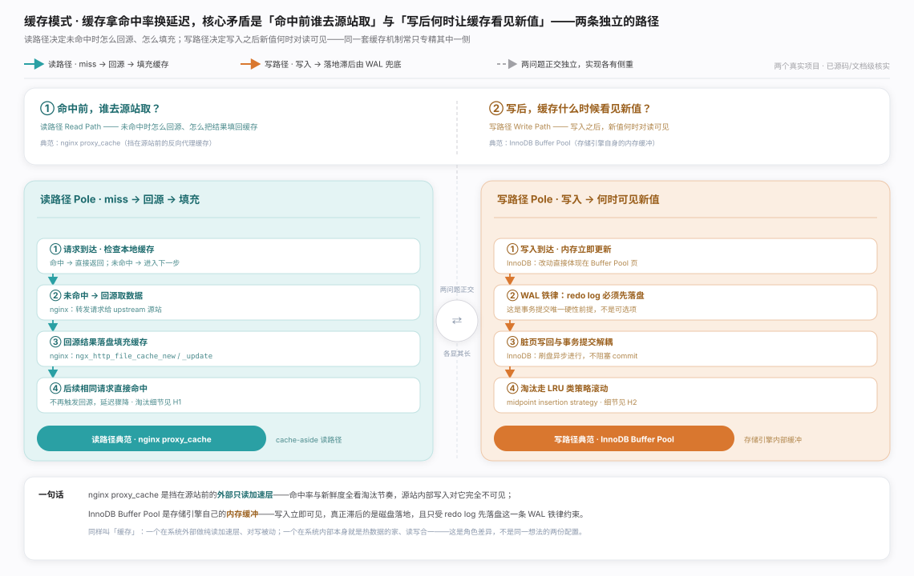
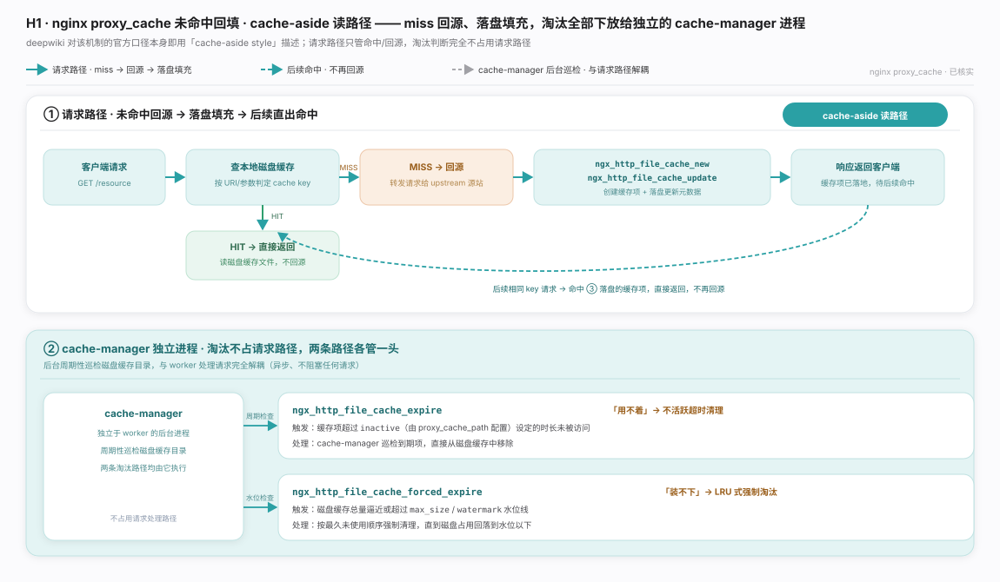
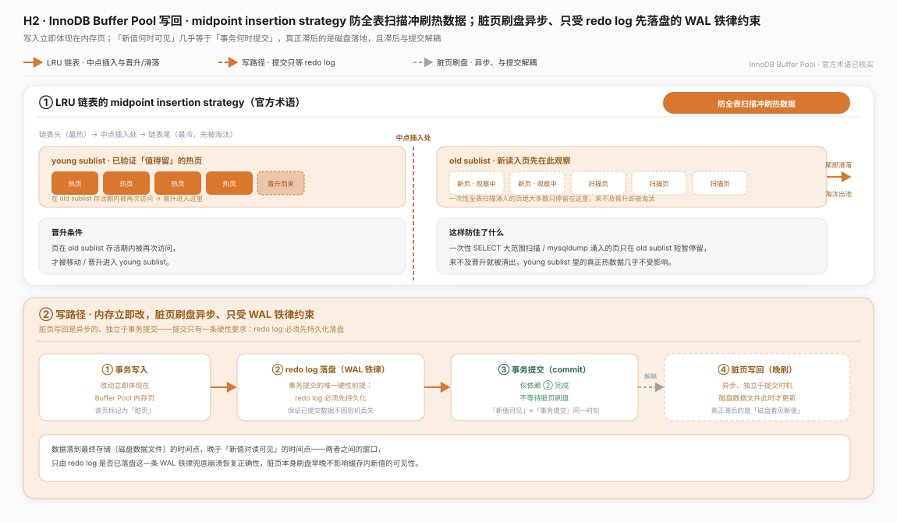
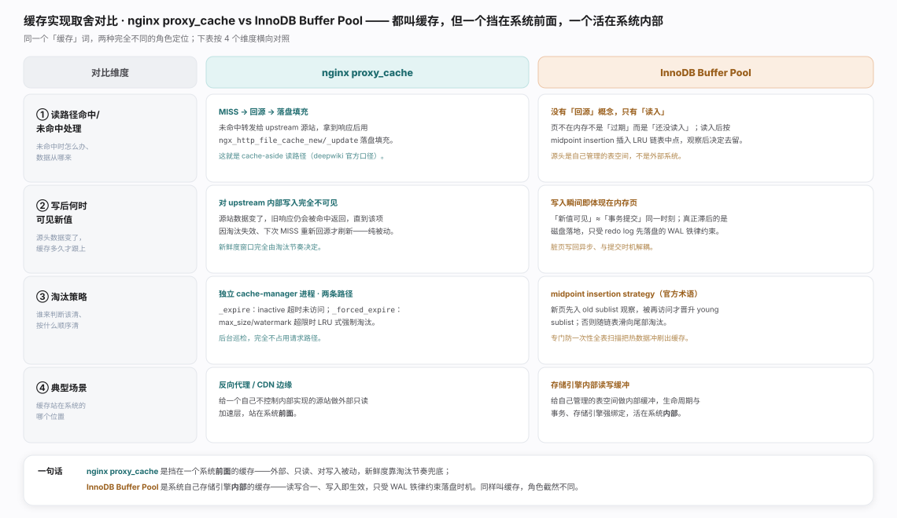

缓存拿命中率换延迟，核心矛盾在两条彼此独立的路径：命中前谁去源站取（读路径）、写后何时让缓存看见新值（写路径）。nginx proxy_cache 专精读路径、对源站内部写入不可见；InnoDB Buffer Pool 专精写路径、本身即权威数据。分工见生态图。

nginx proxy_cache · 读穿透回填：cache-aside 典范，未命中回源、落盘填充。关键设计——淘汰不占请求路径，全部下放给独立的 cache-manager（按 inactive 清过期、按 max_size 做 LRU），两条淘汰路径见图。

InnoDB Buffer Pool · 写回：LRU 用 midpoint insertion 防全表扫描冲刷热页；写这侧脏页刷盘异步、独立于提交，提交只硬性要求 redo log 先落盘（WAL 铁律），机制与时序见图。

两者都叫缓存、角色相反：nginx 是挡在系统前的外部只读缓存，对 upstream 内部写入被动不可见；InnoDB 是系统内部的读写合一缓存，写入即在内存生效、只受 WAL 约束落盘时机。四维对照见图。一句话总纲：先分清缓存在读路径还是写路径，一致性语义随之而定。
nginx ngx_http_proxy_module 官方文档（proxy_cache 指令；具体锚点本轮未能核实是否稳定，故只给根链接）
MySQL 8.0 Reference Manual · InnoDB Buffer Pool（官方文档，"midpoint insertion strategy" 原词出处）
Cache-Aside（旁路缓存 / Lazy Loading）模式 —— 经典缓存模式命名，无单一权威论文或稳定权威链接，此处仅按名称引用，不附具体 URL 以避免猜测深链接。